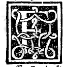

CHAPTER V¶
On the Length (Height), Thickness, Entasis, and Base (Spira) of the Round Column.

Continuing with the round column (Plate 0213), we now set forth the proportions of its shaft (fuso / tronco) and of its base (basa, called spira by Vitruvius).
Proportions of the Shaft, Entasis, and Attic/Ionic Base (Plate 0213)
Slenderness Ratio and Upper vs. Lower Contraction (*Contractura*):
The height of the round column is divided into 6, 7, or 8 equal parts (according to whether it is Doric, Ionic, or Corinthian, as explained below in Chapter VII), and one of those parts is taken as the diameter of the lower necking (contractura inferiore, marked \(ef\) at the bottom of the shaft).
The lower necking \(ef\) must exceed the upper necking \(kp\) (at the top of the shaft beneath the capital) by the exact projection (sporto) of the upper collar/trochilus: that is, the lower shaft without its projecting fillet/torus must equal the upper shaft with its projecting collar, so that the column stands firmly to resist its load.
Entasis (Swelling in Imitation of the Human Body): From the lower necking \(ef\) up to one-third (\(\frac{1}{3}\)) of the shaft’s height, the column swells slightly in imitation of the human body; through the middle third (\(\frac{1}{3}\)) it maintains this fullness; and through the upper third (\(\frac{1}{3}\)) it tapers (se va degradando) gracefully to the upper necking \(kp\) (where the top astragal/collar beneath the capital is called the scapo, trochilo, or toro superiore dela colonna).
Total Height and Mouldings of the Column Base (*Basa / Spira*):
The total height of the base (including its square plinth) must be half the thickness (diameter) of the lower column shaft (\(\frac{1}{2}ef\)).
Its lowest member \(ab\) is a square slab called the plinth (plinto) by the Ancients and latastro by our modern masons:
Its width (including the whole projection, sportafore / proiectura) is one and a half times (\(1\frac{1}{2}\)) the diameter of the column;
Its height is one-sixth (\(\frac{1}{6}\)) of the column diameter (so the remaining mouldings of the base above the plinth total \(\frac{1}{2} - \frac{1}{6} =\) one-third, \(\frac{1}{3}\), of the column diameter!).
Above the plinth \(ab\) stand in order:
The lower torus (toro inferiore or bastone, marked \(cd\));
The lower narrow fillet (quadra);
The concave hollow called scotia (scotica, Greek trochilos, called orbicolo or astragali by our masons);
The upper narrow fillet (quadra);
The upper torus (toro superiore, marked \(ef\)).
Thus the complete base consists of 1 plinth, 2 tori, 2 fillets (*quadre*), and 1 scotia.
Exact Subdivision of the Base Above the Plinth: Removing the plinth (\(\frac{1}{6}\) of the column diameter), divide the remaining upper height (\(\frac{1}{3}\) of the column diameter) into 4 equal parts:
One-fourth (\(\frac{1}{4}\)) goes to the upper torus;
The remaining three-fourths (\(\frac{3}{4}\)) are divided equally in two: half (\(\frac{3}{8}\)) for the lower torus \(cd\), and half (\(\frac{3}{8}\)) for the scotia with its two fillets (quadre)!
All these proportions are rational and expressible by numbers—though where squares and circles meet (as between the diagonal of the square plinth or abacus and its side), there also arise irrational proportions (proportioni irrationali) which cannot be expressed by numbers, but are determined geometrically by line and compass.